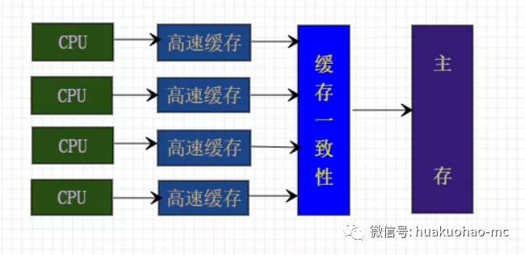

这是并发编程系列的第九篇文章。上一篇介绍了多线程死锁问题，这一篇说一下Java的内存模型，很多并发问题都是由内存模型决定。
还记得第三篇文章中提到的有关volatile的例子吗?
1 | public class NoVisibility { |
上面的代码，ready变量如果不使用volatile关键字进行修饰，那么主线程对ready的修改，子线程将没办法及时发现。要想了解这个问题的本质原因，就需要了解JVM的内存模型。
多核共享内存模型
现在的计算机几乎都是多核CPU了。而每一核都有自己的高速缓存，用于存储一些指令和变量。缓存中的内容，其它核是看不到的，只有同步到主内存之后才能被其他CPU看到。如何以及何时将缓存里面的值写入主存凭借的是缓存一致性。大概应该是这个样子。

以上都是硬件相关的背景知识。
重排序
JVM为了能够提高程序执行性能，会打乱指令的执行顺序，然后将指令分散到多个CPU中去执行，以提高性能，只要最终的执行结果与严格的串行环境执行结果一致。
共享变量
为了解决共享变量的正确访问问题，JVM是这样做的。在JVM眼里，变量的读写是个操作，内置锁的加锁和释放是个操作，线程的启动也是个操作。JVM为这些操作定义了一个Happens-Before的规则。如果想保证执行A操作的结果被操作B看到，无论A和B是否在同一个线程，那么A和B之间需要满足Happens-Before的关系。如果两个任意的操作之间没有Happens-Before关系，那么JVM就会对指令进行重排序。
Happens-Before规则，引自《Java并发编程实战》。
程序次序规则：一个线程内，按照代码顺序，书写在前面的操作先行发生于书写在后面的操作；
锁定规则：一个unLock操作先行发生于后面对同一个锁额lock操作；
volatile变量规则：对一个变量的写操作先行发生于后面对这个变量的读操作；
传递规则：如果操作A先行发生于操作B，而操作B又先行发生于操作C，则可以得出操作A先行发生于操作C；
线程启动规则：Thread对象的start()方法先行发生于此线程的每个一个动作；
线程中断规则：对线程interrupt()方法的调用先行发生于被中断线程的代码检测到中断事件的发生；
线程终结规则：线程中所有的操作都先行发生于线程的终止检测，我们可以通过Thread.join()方法结束、Thread.isAlive()的返回值手段检测到线程已经终止执行；
对象终结规则：一个对象的初始化完成先行发生于他的finalize()方法的开始；
结束
简单说如果两个指令之间没有Happens-Before规则，那么JVM就有可能对指令进行重排序，如果有重排序发生，那么我们在多线程的程序中就有可能看到共享变量的不一致状态。
推荐阅读
1. Java并发编程那些事儿(一) ——任务与线程
2. Java8的Stream流真香，没体验过的永远不知道
3. Awk这件上古神兵你会用了吗
4. 手把手教你搭建一套ELK日志搜索运维平台